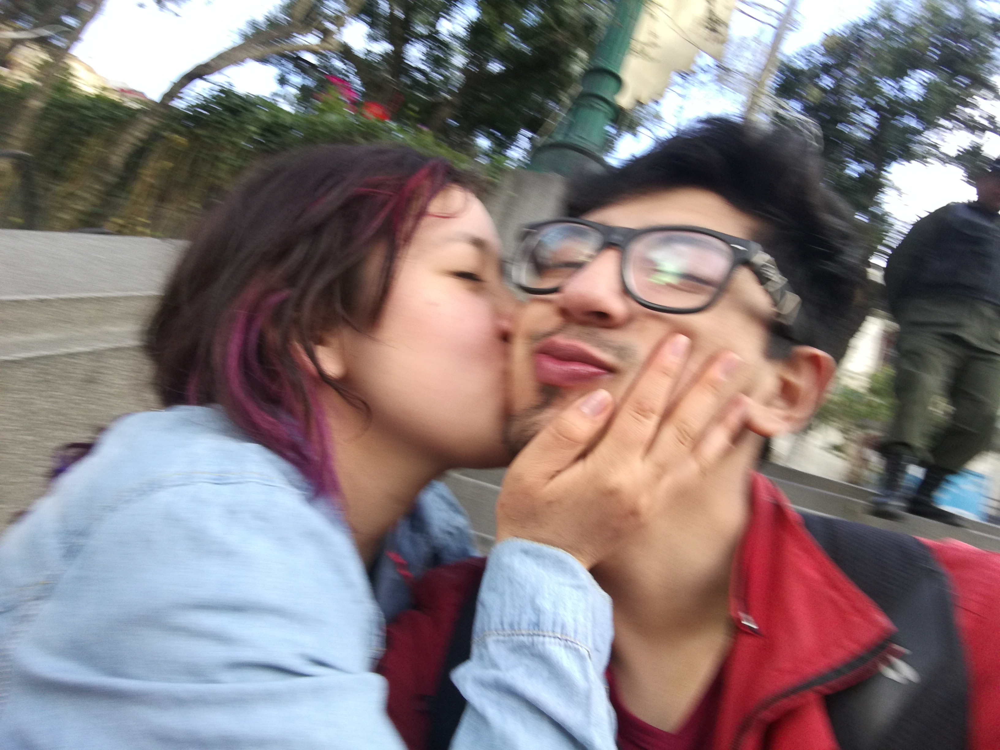
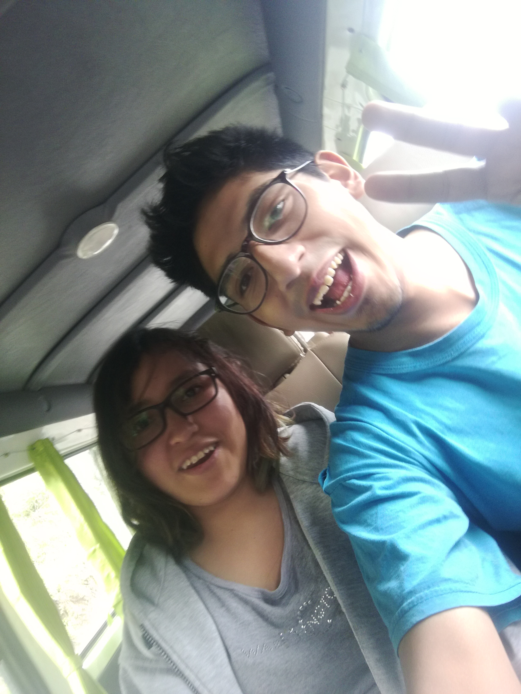
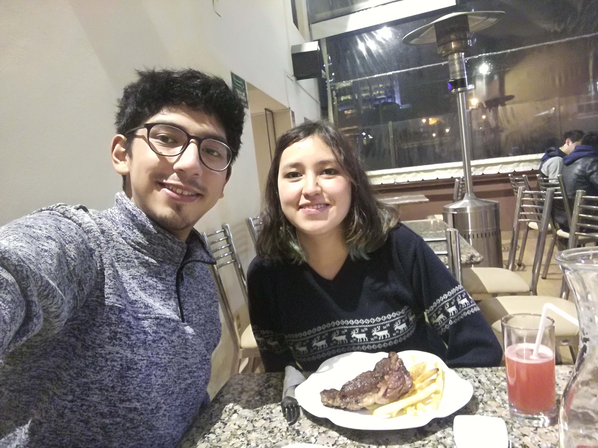
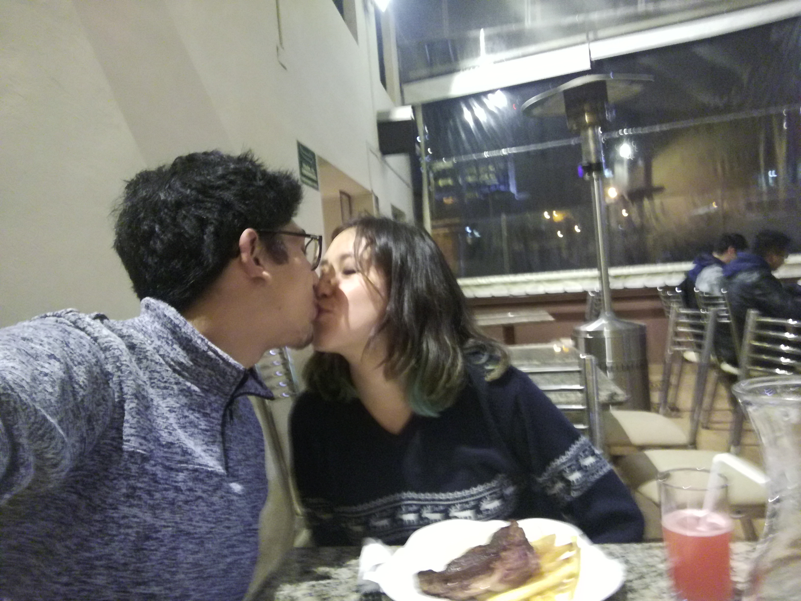
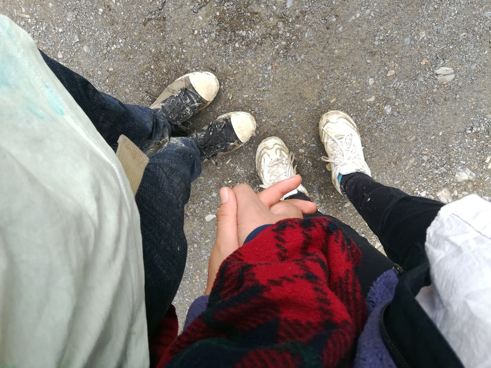

Para: mi Jhenifer
De: Kevin
Te amo
Jhenifer:
Eres para mi mucho más de lo que te imaginas
já, no tienes ni idea, todo lo que pasa por mi mente,
todo lo que ocurre en mi corazón, todo lo que siginificas
para mi, realmente no tienes ni idea, podría decirse que subestimas
el amor que te tengo, lo subestimas porque si supieras todo lo que siento
si supieras que cuando pienso en tu sonrisa yo también sonrío, si supieras
que digo tu nombre casi todos los días suspirando de amor,
si supieras que cuando hablo conmigo mismo ya no escucho mi propia voz en mi mente...
escuho la tuya amor mío, haz invadido cada uno de mis sentidos, si supieras
que cada vez que pienso en tu piel me da ganas de acariciarte, si supieras que
extraño tus caricias todas las noches, si supieras que lo primero que pienso
en la mañana es en ti, cada vez que me rio, te extraño porque estoy acostumbrado
a reir contigo, si supieras todo lo que siento quizá te asustes un poco, pero sé
que también te tranquilizaría el corazón, cualquier inseguridad desaparecería porque
tanto amor es imposible de desaparecer.
Cuando estoy triste sólo pienso en buscar consuelo en ti, y no tienes idea de
cuánto valoro que siempre estés ahí en mis peores momentos, valoro que hayas
sido la única persona que no se haya ido por cansancio de mi irritante personalidad
quizá para ti no sea irritante, y es que creo que por esas cositas somos el uno para el otro.
pero no sólo por las tristezas, también porque cada vez que estoy muy feliz, sólo pienso en estar
a tu lado y compartir esos momentos.
Cuando te veo con una nueva ropa, no tienes idea de lo hermosa que te ves
me da ganas de decirle a todos en la calle que eres mi novia, y que nos vamos a casar jaja,
y lo que más me gusta es que siento esas mariposas como si fuese la primera vez,
eres una fuente inagotable de dopamina xD,
cada vez que te haces un mínimo cambio, fuese simplemente pintarse las uñas, tus manos
se vuelven las manos más hermosas que haya visto.
Te siento tan lindo Jhenifer, y amor, tu me haz cambiado la vida, la mitad de mi personalidad
es la tuya (me la robé xD), pero no sólo la personalidad, las expresiones y chistes, si no también
cambiaste mi mentalidad, mi forma de percibir el mundo, cambiaste mi destino, yo no sería Kevin sin
Jhenifer, quiero que reflexiones un poco eso, de verdad dirigiste mi destino muy drásticamente
y estoy agradecido de ello, creo que eres la única persona en el mundo que me entiende
cada fragmento de mi alma, y esta conexión que tenemos es más fuerte que cualquier metal,
mi amor por ti es más fuerte que la terquedad de todas las personas del mundo,
yo creo en ti más fuertemente que cualquier religión cree en su Dios, yo te sigo a ti,
yo estaré siempre a tu lado, yo moriré a tu lado, yo haré todo por ti.
Alguna vez le pregunté a las estrellas quién es la más linda estrella, y ellas
empezaron a discutir porque todas eran muy bellas, pero luego les mostré una foto tuya,
y dijeron que la estrella más linda era YO xD, jaja, es broma, las estrellas se enamoraron
de ti Jhenifer y desde aquel día todas ellas no dejan de mirarte, pero yo como todo el presumido que soy
les saco la lengua, porque ningún ser en el universo tiene tanta conexión como nosotros.
también le pregunté a las rosas lo mismo pero las rosas no hablan.
Tu aroma es el mejor perfume, tus labios son más suaves y dulces que la tierra de un valle ensangrentado
después de una batalla medieval (pero son los mejores labios del mundo), tus dientes son
las joyas más caras del mundo, tu piel es la tela más fina y elegante de todas,
en fin esta es una pequeña carta amorcito, y no será la última, visita esta página de vez en cuando
estaré actualizando, con mucho amor: KEVIN.


